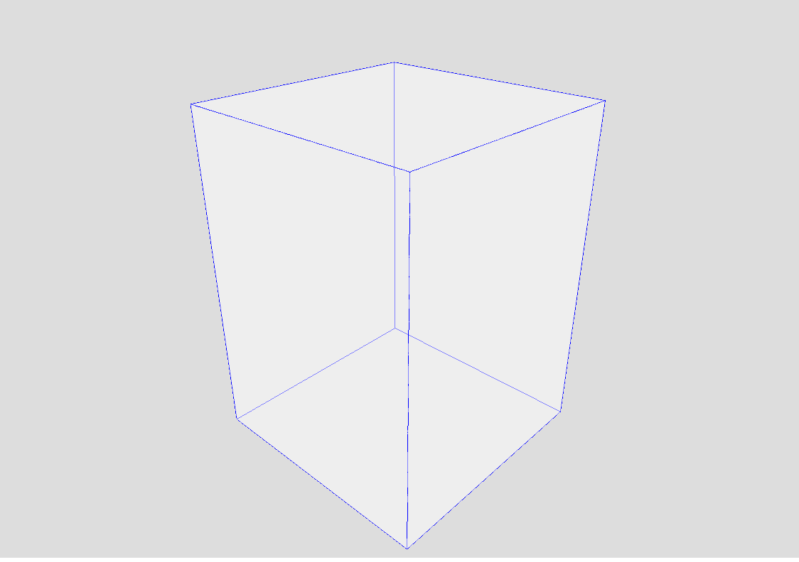
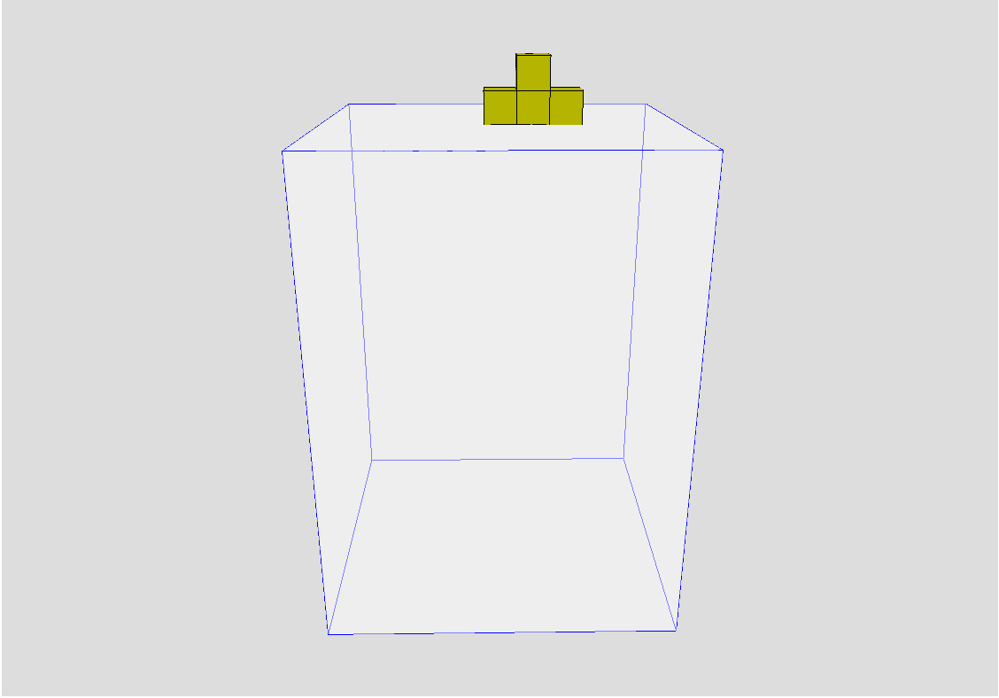

three.jsを使った3Dグラフィックス
本コンテンツでは、three.jsについての説明をして、実際にthree.jsを使ってみる。
Three.jsの導入方法 +
cdnを利用する
cdnを利用すると、ビルドシステムなしでthree.jsを利用することができる。ライブラリを参照するスクリプトは以下のようにtype="module"を使用する必要がある。
<script type="importmap">
{
"imports": {
"three":
"https://cdn.jsdelivr.net/npm/three@<version>/build/three.module.js"
}
}
</script>
<script type="module">
import * as THREE from 'three';
const scene = new THREE.Scene();
</script>これでthree.jsが利用できる。
基礎
カメラの設定 +
カメラはシーンをどの角度から見るかを定義する。一般的に使用されるのは遠近法カメラ（PerspectiveCamera）である。
const camera = new THREE.PerspectiveCamera(75, window.innerWidth / window.innerHeight, 0.1, 1000);
camera.position.z = 5;レンダラーの設定 +
レンダラーはシーンとカメラの情報を使って、3D空間を2D画面に描画する。
const renderer = new THREE.WebGLRenderer();
renderer.setSize(window.innerWidth, window.innerHeight);
document.body.appendChild(renderer.domElement);ジオメトリの作成 +
ジオメトリは3Dオブジェクトの形状を定義する。例えば、ボックスを作成する場合：
// ケースの面を作成
const caseSize = 460;
const blockSize = 46;
const caseGeometry = new THREE.BoxGeometry(caseSize+blockSize, caseSize*3/2, caseSize+blockSize);
const caseMaterial = new THREE.MeshBasicMaterial({
color: 0xffffff, // 面を白に塗る
transparent: true,
opacity: 0.5
});
const caseMesh = new THREE.Mesh(caseGeometry, caseMaterial);
scene.add(caseMesh);
// ケースのエッジを作成
const edgesGeometry = new THREE.EdgesGeometry(caseGeometry);
const edgesMaterial = new THREE.LineBasicMaterial({
color: 0x0000ff,
linewidth: 2
});
const edgesMesh = new THREE.LineSegments(edgesGeometry, edgesMaterial);
scene.add(edgesMesh);ボックスを追加したときの図
光源の追加 +
光源はシーンに陰影をつけ、より現実的な見た目にする。
const light = new THREE.PointLight(0xffffff, 1, 100);
light.position.set(0, 0, 10);
scene.add(light);応用：3Dテトリスの作成
テトリミノの作成 +
テトリミノは複数の立方体で構成される。各テトリミノの形状を定義し、それをもとに3Dオブジェクトを作成する。
// テトリミノの形状を定義するデータ配列
const blocksData = [];
blocksData.push([
{ position: { x: 0, y: 0, z: 0 } },
{ position: { x: 1, y: 0, z: 0 } },
{ position: { x: 2, y: 0, z: 0 } },
{ position: { x: 3, y: 0, z: 0 } }
]); // I
blocksData.push([
{ position: { x: 0, y: 0, z: 0 } },
{ position: { x: 1, y: 0, z: 0 } },
{ position: { x: 0, y: 1, z: 0 } },
{ position: { x: 1, y: 1, z: 0 } }
]); // O
blocksData.push([
{ position: { x: 0, y: 0, z: 0 } },
{ position: { x: 1, y: 0, z: 0 } },
{ position: { x: 2, y: 0, z: 0 } },
{ position: { x: 1, y: 1, z: 0 } }
]); // T
blocksData.push([
{ position: { x: 0, y: 0, z: 0 } },
{ position: { x: 1, y: 0, z: 0 } },
{ position: { x: 2, y: 0, z: 0 } },
{ position: { x: 0, y: 1, z: 0 } }
]); // L
blocksData.push([
{ position: { x: 0, y: 0, z: 0 } },
{ position: { x: 1, y: 0, z: 0 } },
{ position: { x: 2, y: 0, z: 0 } },
{ position: { x: 2, y: 1, z: 0 } }
]); // J
blocksData.push([
{ position: { x: 1, y: 0, z: 0 } },
{ position: { x: 2, y: 0, z: 0 } },
{ position: { x: 0, y: 1, z: 0 } },
{ position: { x: 1, y: 1, z: 0 } }
]); // S
blocksData.push([
{ position: { x: 0, y: 0, z: 0 } },
{ position: { x: 1, y: 0, z: 0 } },
{ position: { x: 1, y: 1, z: 0 } },
{ position: { x: 2, y: 1, z: 0 } }
]); // Z
function makeblock() {
blocksData[Math.floor(Math.random() * blocksData.length)].forEach(block => { //ランダムな形状を選択
const blockGeometry = new THREE.BoxGeometry(blockSize, blockSize, blockSize); //立方体のジオメトリを作成
const blockMaterial = new THREE.MeshPhongMaterial({ color: 0x00ff00 }); //緑色のマテリアルを作成
const blockMesh = new THREE.Mesh(blockGeometry, blockMaterial); //立方体のメッシュを作成
blockMesh.position.set(block.position.x * blockSize, block.position.y * blockSize, block.position.z * blockSize); //位置を設定
tetromino.push(blockMesh); //tetrominoに追加
scene.add(blockMesh); //sceneに追加
});
for (let i = 0; i < tetromino.length; i++) {
tetromino[i].position.y += caseSize*3/4+blockSize/2; // テトリミノを初期位置に設定する。
}
}テトリミノを作成したときの図
テトリミノの回転 +
3Dテトリスでは、テトリミノをxy平面上における90度の回転と、xz平面上における90度の回転を行うことにした。
function rotateTetromino(tetromino, axis) {
function rotateTetromino(angle) {
if(angle==1){ //xy平面上の右回転
//回転するときの中心の座標を取得
const Oposx = tetromino[0].position.x;
const Oposy = tetromino[0].position.y;
for (let i = 0; i < tetromino.length; i++) {
#中心との差分を取得
tetromino[i].position.x -= Oposx;
tetromino[i].position.y -= Oposy;
//回転
const posx = tetromino[i].position.x;
tetromino[i].position.x = tetromino[i].position.y;
tetromino[i].position.y = -posx;
//中心との差分を足す
tetromino[i].position.x += bposx;
tetromino[i].position.y += bposy;
}
}else if(angle==-1){ //xy平面上の左回転
//回転するときの中心の座標を取得
const Oposx = tetromino[0].position.x;
const Oposy = tetromino[0].position.y;
for (let i = 0; i < tetromino.length; i++) {
//中心との差分を取得
tetromino[i].position.x -= Oposx;
tetromino[i].position.y -= Oposy;
//回転
const posx = tetromino[i].position.x;
tetromino[i].position.x = -tetromino[i].position.y;
tetromino[i].position.y = posx;
//中心との差分を足す
tetromino[i].position.x += bposx;
tetromino[i].position.y += bposy;
}
}else{ //xz平面上の回転
//回転するときの中心の座標を取得
const Oposx = tetromino[0].position.x;
const Oposz = tetromino[0].position.z;
for(let i = 0; i < tetromino.length; i++){
//中心との差分を取得
tetromino[i].position.x -= bposx;
tetromino[i].position.z -= bposz;
const posx = tetromino[i].position.x;
const posz = tetromino[i].position.z;
//回転
tetromino[i].position.x = posz;
tetromino[i].position.z = -posx;
//中心との差分を足す
tetromino[i].position.x += bposx;
tetromino[i].position.z += bposz;
}
}
}色の追加 +
各テトリミノに異なる色を割り当てることで、ゲームをより視覚的に魅力的にできる。色はランダムに割り当てるようにした。
function makeblock() {
// 赤、緑、青、黄色の色データ
const colordata = [{ r: 1, g: 0, b: 0 }, { r: 0, g: 1, b: 0 }, { r: 0, g: 0, b: 1 }, { r: 1, g: 1, b: 0 }];
// ランダムに色を選択
const color = colordata[Math.floor(Math.random() * colordata.length)];
blocksData[Math.floor(Math.random() * blocksData.length)].forEach(block => {
const blockGeometry = new THREE.BoxGeometry(blockSize, blockSize, blockSize);
// ランダムな色をテトリミノに割り当て
const blockMaterial = new THREE.MeshPhongMaterial({
color: new THREE.Color(color.r, color.g, color.b)
});
// ブロックのメッシュを作成
const blockMesh = new THREE.Mesh(blockGeometry, blockMaterial);
/*
ブロックに対する何らかの処理
*/
});
}衝突判定 +
テトリミノが他のブロックや壁と衝突しないようにするために、衝突判定が必要である。テトリミノは複数の立方体で表せるため、立方体それぞれに対して判定を行った。
function checkCollision(tetromino, gameBoard) {
// 各ブロックごとに接触を判定
var posy1 = -1; //tetrominoのy座標
var posy2 = -1; //falledblockのy座標
for(let i = 0; i < tetromino.length; i++){
for(let j = 0; j < falledblock.length; j++){
if(posy1!=-1) continue;
if(tetromino[i].position.x==falledblock[j].position.x&&tetromino[i].position.z==falledblock[j].position.z){ //x座標とz座標が一致
if(tetromino[i].position.y-falledblock[j].position.y<=blockSize){ //y座標の差がblockSize以下
posy1 = tetromino[i].position.y;
posy2 = falledblock[j].position.y;
}
}
}
}
if(posy1!=-1){ //tetrominoがfalledblockに接触
for(let i = 0; i < tetromino.length; i++){
scene.remove(tetromino[i]); //tetrominoを削除
const blockMesh = tetromino[i]; //falledblockに追加
blockMesh.position.y -= posy1-posy2; //y座標を調整
blockMesh.position.y += blockSize; //blockSize分上に移動
scene.add(blockMesh); //sceneに追加
blockMesh.position.x = Math.round(blockMesh.position.x/blockSize)*blockSize; //x座標を調整
blockMesh.position.z = Math.round(blockMesh.position.z/blockSize)*blockSize; //z座標を調整
blockMesh.position.y = Math.round(blockMesh.position.y/blockSize)*blockSize; //y座標を調整
falledblock.push(blockMesh); //falledblockに追加
}
tetromino.splice(0,tetromino.length); //tetrominoを削除
}
posy1 = -1;
for(let i = 0; i < tetromino.length; i++){
if(posy1!=-1) continue;
if(tetromino[i].position.y<=-caseSize*3/4+blockSize/2){ //tetrominoが床に接触
posy1 = tetromino[i].position.y; //y座標を取得
}
}
if(posy1!=-1){ //床に接触
for(let i = 0; i < tetromino.length; i++){
scene.remove(tetromino[i]);
const blockMesh = tetromino[i];
blockMesh.position.y -= posy1+(caseSize*3/4+blockSize/2);
blockMesh.position.y += blockSize;
blockMesh.position.x = Math.round(blockMesh.position.x/blockSize)*blockSize;
blockMesh.position.z = Math.round(blockMesh.position.z/blockSize)*blockSize;
blockMesh.position.y = Math.round(blockMesh.position.y/blockSize)*blockSize;
scene.add(blockMesh);
falledblock.push(blockMesh);
}
tetromino.splice(0,tetromino.length);
}
ユーザー入力の処理 +
キーボード入力を使って、テトリミノの移動や回転を制御する。具体的には、WASDでテトリミノの移動、Q,Eでテトリミノの回転を行うように設定した。
document.addEventListener('keydown', (event) => {
const keyName = event.key; // 押されたキーの名前を取得
const moveDistance = blockSize; // テトリミノの移動距離
switch (keyName) { // キーに応じて処理を分岐
case 'w': // Wキー
if(wside-blockSize/2>=-(caseSize/2-blockSize/2)){ // 移動可能な範囲内かチェック
for (let i = 0; i < fallingblockmesh.length; i++) {
fallingblockmesh[i].position.z -= moveDistance; // テトリミノを移動
}
}
break; // 処理を終了
case 's': // Sキー
if(sside+blockSize/2<=caseSize/2-blockSize/2){ // 移動可能な範囲内かチェック
for (let i = 0; i < fallingblockmesh.length; i++) {
fallingblockmesh[i].position.z += moveDistance; // テトリミノを移動
}
}
break;
case 'a': // Aキー
if(aside-blockSize/2>=-(caseSize/2-blockSize/2)){ // 移動可能な範囲内かチェック
for (let i = 0; i < fallingblockmesh.length; i++) {
fallingblockmesh[i].position.x -= moveDistance; // テトリミノを移動
}
}
break;
case 'd': // Dキー
if(dside+blockSize/2<=caseSize/2-blockSize/2){ // 移動可能な範囲内かチェック
for (let i = 0; i < fallingblockmesh.length; i++) {
fallingblockmesh[i].position.x += moveDistance; // テトリミノを移動
}
}
break;
case 'q': // Qキー
rotateTetromino(-1); // テトリミノを左回転
break;
case 'e': // Eキー
rotateTetromino(1); // テトリミノを右回転
break;
default: // それ以外のキー
break;
}
});3Dテトリスの実装例 +
three.jsを使ったものの例として、3Dテトリスを作成した。
この例では、3Dテトリスを実装した。テトリミノの生成、落下、衝突判定、ロック（固定）などのテトリスにある基本的な機能を実装した。
本コンテンツの作成時間
約12時間